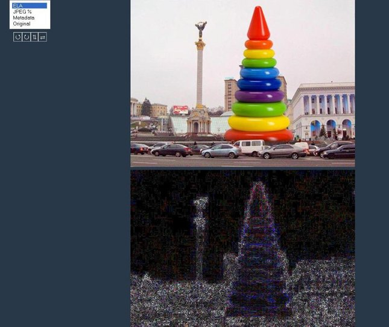
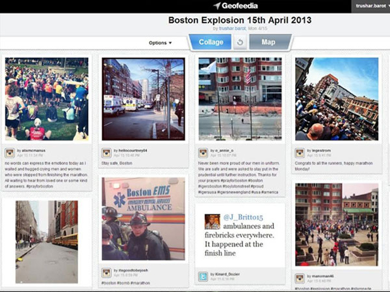
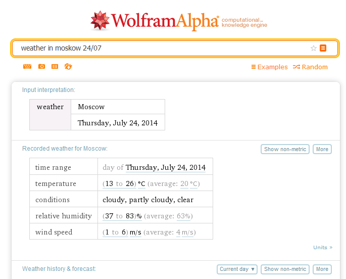

13 онлайн-инструментов для проверки подлинности фотографий
С помощью нескольких онлайн-инструментов можно проверить на подлинность фотографии, «вытянуть» из них как можно больше данных и найти больше информации о человеке, пишет сайт Mediasapiens.ua.
Findexif.com — бесплатный сервис, на который можно загрузить фотографию или дать ссылку на нее — он определит EXIF-данные (сведения, когда было сделано фото, каким устройством, параметры изображения, для некоторых фото можно определить и место съемки).
Foto Forensics — веб-сайт, который может сделать error level analysis (ELA), то есть найти области «дорисованные» на изображении или вставлены в него при редактировании.После обработки программа выдает фотографию, где редактируемые фрагменты будут выделяться на фоне других.Кроме того, программа также предоставит EXIF- данные фотографии.
Google Search by Image — обратный поиск изображений, сюда можно загрузить фото, чтобы найти его оригинальный источник и посмотреть, где оно еще публиковалось .
TinEye — еще один инструмент для обратного поиска.
JPEGSnoop — программа, которая устанавливается на компьютер (работает только для Windows), также позволяет посмотреть метаданные не только изображений, но и форматов AVI, DNG, PDF, THM. Программу можно использовать для многих целей, например, она позволяет увидеть, редактировалось ли изображение, выявить ошибки в поврежденном файле т.п.
Алгоритм проверки изображения
1.Установить автора либо первоисточник фотографии.Наиболее очевидный и обычно наиболее эффективный путь сделать это — связаться с тем, кто загрузил фотографию или прислал в редакцию, и спросить, сам ли человек сделал фото.Также обязательно нужно поискать фотографию через обратный поиск изображений.Google показывает также похожие картинки, что иногда помогает увидеть, была ли фотография отредактирована.Ссылка на фото в большом разрешении, как правило, и является первоисточником.
2.Необходимо проверить саму личность, которая распространяет информацию.Для того чтобы собрать о ней больше информации, есть несколько различных ресурсов, и хотя большинство из них создано для жителей США, есть и такие, которые будут полезны для разных стран.Например, Pipl.com — предназначен для поиска «интернет — следа» пользователя, помогает его идентифицировать, найти фотографии.Программа производит поиск во всех социальных американских сетях (Facebook, LinkedIn, MySpace) — для этого нужно ввести имя и фамилию латиницей.Особенность программы в том, что она ведет поиск по «глубокому интернету» (deepWeb), который игнорируется обычными поисковыми системами и недоступен для пользователей.
Дополнительный полезный ресурс WebMii — ищет ссылку с именем человека, дает рейтинг «веб — видимости», с помощью которого можно установить фейковые аккаунты.Благодаря инструменту каждый может найти упоминание своего имени на иностранных ресурсах.
Для поиска в Рунете можно использовать сервис people.yandex.ru.
3.Следующим шагом в проверке фото должно быть подтверждение места, даты и приблизительного времени, когда было сделано фото.Легче спросить самого автора или попросить сделать его другие снимки этого места — если он доступен для связи.Далее проверить исходные данные с помощью указанных выше программ.Журналистам, которые хорошо разбираются в цифровой фотографии, будут понятны многочисленные параметры, предоставленные этой программой.Для остальных более нужная информация — это время, место съемки, фотоаппарат.Если метаданные недоступны, нужно внимательно изучить снимок: номера машин, погодные условия, ландшафт, стиль одежды, рекламные объявления, здания, магазины — эти детали помогут определить местность, а иногда и становятся свидетельством подделки.
В проверке фотографии есть еще один казалось бы очевидный момент — подтверждение, что фотография действительно изображает то, о чем заявлено.Ведь она может быть настоящей, а вот описание не будет соответствовать действительности.Так, во время урагана Сэнди в Твиттере распространяли такую фотографию:
На ней изображено, как будто во время шторма трое солдат стоят у мемориала неизвестному солдату.Но на самом деле фото было сделано месяцем ранее — установить это помог обратный поиск изображения.
Разобраться в локациях поможет Google Maps или Wikimapia (краудсорсинговая версия GoogleMaps).Полезный сайт Panoramio — здесь можно разместить фотографии, обозначив их географические координаты (сайт интегрирован с картами Google).
Geofeedia — инструмент «куратор социальных сетей», который агрегирует результаты не по ключевым словам или хэштегам, а по месту расположения, которое вы задаете.Сервис обрабатывает сообщения из Twitter, Flickr, Youtube, Instagram и Picasa, присланные с использованием GPS, и затем представляет их в виде коллажа.Сервис платный, бесплатной является только демо-версия.
Еще один способ проверить фото — посмотреть, какие погодные условия были в заявленном месте в конкретный день.Здесь полезной станет поисковая система Wolfram Alpha.Об этом инструменте стоит сказать подробнее — это даже не поисковая система, а база знаний с научным уклоном.Интеллектуальный робот, который может отвечать на самые разные вопросы.Но он ориентируется только в темах, касающихся точной, энциклопедической информации, а не текущих событий.Ссылок на другие сайты не предоставляет, а выдает уже готовый вариант ответа.Работать с Wolfram Alpha нужно на английском языке.
«Вольфрам Альфа» предназначен не только для проверки погоды, этот инструмент может быть полезным как в повседневной работе журналиста, так и для развлечения.
Источник: Mediasapiens.ua.
Posted On: 2014-07-28T21:00:00



Content Date: 2014-07-28
Download Date: 2021-07-16
Document ID: L0C04FEOV